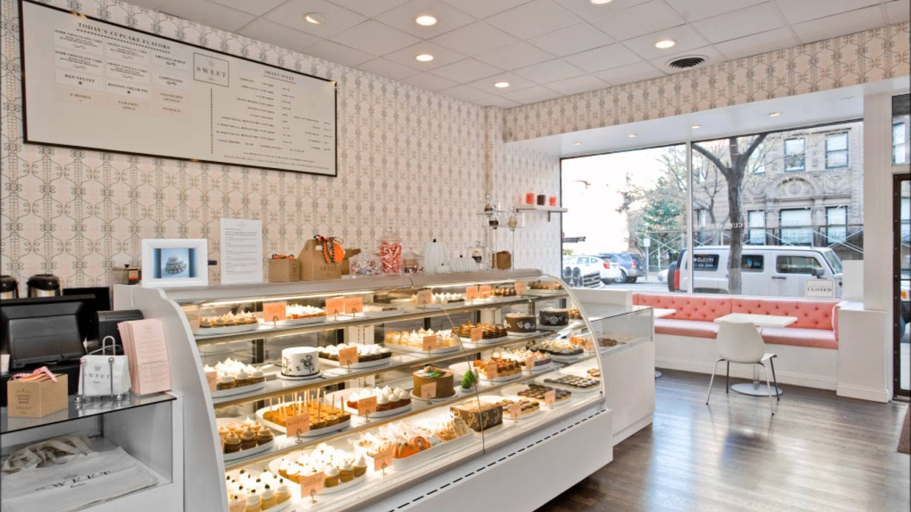

MINI'S BAKERY
Kedai bakeri yang menjual pelbagai jenis makanan seperti kek,kuih tradisional,roti,kuih raya dan lain-lain
Fresh Bakes, Fresh Memories
Our Menu
- Croissant Mentega Klasik
- Pastri berlapis yang rangup di luar dan lembut berkrim di dalam, dibakar segar dengan mentega premium. — RM 7.50
- Kek Coklat Fudge Melimpah
- Kek coklat lembap yang kaya dengan lapisan fudge coklat gelap pekat dan premium. — RM 15.00
- Tart Buah-Buahan Segar
- Kerak tart rangup berintikan kastard vanila lembut dan dihiasi dengan potongan buah beri serta mangga segar. — RM 9.80
- Roti Sourdough Artisan
- Roti yis semula jadi dengan kerak yang garing dan tekstur dalaman yang kenyal, sesuai untuk roti bakar. — RM 12.00
How to Order
- Pergi ke Website
- Pilih menu yg dikehendaki
- Add to cart dan bayar
- COD
- Delivery to House
- Pickup
What Our Customers Say
"Roti dan pastri di sini sentiasa segar dan lembut! Tempahan kek hari jadi yang saya buat baru-baru ini bukan sahaja cantik rekaannya, malah rasanya sangat sedap dan tidak terlalu manis. Pasti akan repeat order!"

Contact Information
724A
Lorong Nilam
4/3,
Taman Delima
Sungai Petani.
Send email
MiniBakery
© 2026 Mini & bakeryé • All Rights Reserved